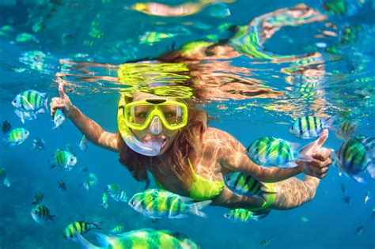
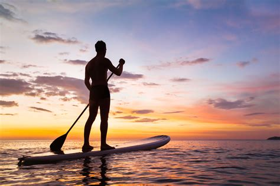
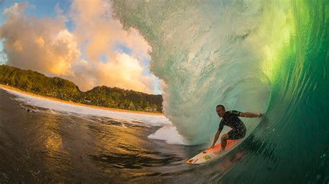

Taniti: Where Adventure Meets Paradise
Dive into Crystal-Clear Waters
Unmask the secrets of Taniti's underwater world. Snorkel amidst vibrant coral reefs teeming with colorful fish, or dive deeper to discover shipwrecks and marine giants.
Paddleboard Through Hidden Coves
Find your zen as you glide across the glassy surface of the ocean, exploring secluded coves untouched by time. Feel the warm sun and breathe in the fresh sea air.
Surf World-Class Breaks
Challenge yourself on Taniti's legendary waves, renowned for their power and consistency. Whether you're a seasoned surfer or a curious beginner, there's a break waiting for you.